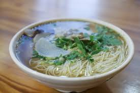

Ramen Noodle Soup
Home

Why You'll Love This Recipe
- This recipe offers a deeply savory, umami base by simmering noodles in vegetable broth.
- Home cooks like the flexible ingredients and add-ins that let them personalize the bowl.
- Allrecipes.com member Ms Jean raves, "...tasted like something from a restaurant!"
Ingredients:
- 3 1/2 cups vegetable broth
- 1(3.5 ounce) package ramen noodles with dried vegetables
- 2 teaspoons soy sauce
- 1/2 teaspoon chili oil
- 1/2 teaspoon minced fresh ginger root
- 1 teaspoon sesame oil
- 2 green onions, sliced
Directions
- Gather the ingredients
- Combine broth and noodles in a medium saucepan;
cover and bring to a boil over high heat, stirring to break up noodles.
- Reduce heat to medium and add soy sauce, chili oil, and ginger.
Simmer, uncovered, for 10 minutes.
- Stir in sesame oil.
- Garnish with green onions and serve.
Enjoy!